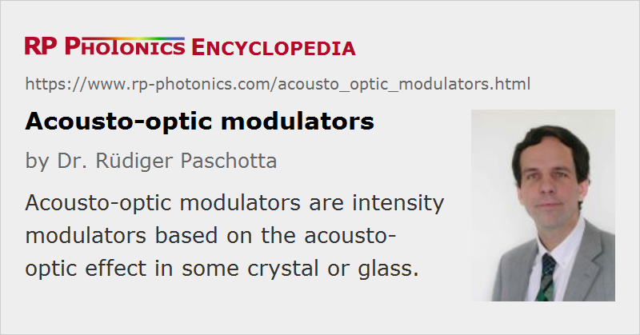

Acousto-optic Modulators
Acronym: AOM
Definition: optical modulators based on the acousto-optic effect
More general terms: optical modulators
German: akustooptische Modulatoren
How to cite the article; suggest additional literature
Author: Dr. Rüdiger Paschotta
An acousto-optic modulator (AOM) is a device which can be used for controlling the power of a laser beam with an electrical drive signal. It is based on the acousto-optic effect, i.e. the modification of the refractive index of some crystal or glass material by the oscillating mechanical strain of a sound wave (photoelastic effect).
Usually, an AOM is understood to be an intensity modulator; other acousto-optic devices are suitable for shifting the optical frequency (→ acousto-optic frequency shifter) or the spatial direction (acousto-optic deflectors).
The key element of an AOM is a transparent crystal (or piece of glass) through which the light propagates. A piezoelectric transducer attached to the crystal obtains a strong oscillating electrical signal from an RF driver (often via an impedance matching device) and is used to excite a sound wave with a frequency of the order of 100 MHz and with an acoustic wavelength which is typically between 10 μm and 100 μm. The sound wave generates a traveling strain wave in the material. Through the photo-elastic effect, that leads to a traveling refractive index grating, at which light can experience Bragg diffraction; therefore, AOMs are sometimes called Bragg cells.
For a very short interaction length in the modulator, one would operate in the Raman–Nath regime, where multiple diffraction orders are obtained. However, most AOMs operate in the Bragg regime, where there is a substantial diffraction efficiency for the first diffraction order and hardly any scattering into other orders.
The optical frequency of the diffracted beam is increased or decreased by the frequency of the sound wave (depending on the propagation direction of the acoustic wave relative to the beam) and propagates in a slightly different direction. (The change in direction is smaller than shown in Figure 1, because the wavenumber of the sound wave is very small compared with that of the light beam.) The frequency and direction of the scattered beam depend on the frequency of the sound wave, whereas the acoustic power is the control for the diffracted optical power. For most applications, the slight change of optical frequency is irrelevant.
The diffraction process may or may not be polarization-dependent, depending on the device designs (use of longitudinal or shear waves, isotropic or anisotropic material etc.). Further, the output polarization is the same as the input polarization for devices with an isotropic interaction, while for anisotropic modulators it is different, and these devices then work only for the correct input polarization. For AOMs, the use of longitudinal (compression) waves is most common, where the diffraction efficiency is strongly polarization-dependent. Polarization-independent operation can be obtained when using acoustic shear waves (with the acoustic movement in the direction of the laser beam).
Typically, an AOM is placed in a small box, having two holes or optical windows on opposite sides for the laser beam going through, and a connector for the RF driver. Sometimes that box is placed on a rotating table for precise rotational adjustment.
Diffraction Efficiency and Contrast Ratio
For small acoustic powers, the diffraction efficiency is proportional to the acoustic power; for higher powers, it saturates. For sufficiently high acoustic power, more than 50% of the optical power can be diffracted – in extreme cases, even more than 95% diffraction efficiency is achieved. High diffraction efficiencies are easier to achieve for short optical wavelengths.
The contrast ratio is defined as the ratio of maximum and minimum transmitted power. The latter may be limited by scattering. For the diffracted beam, the contrast ratio can be quite high (order of 1000), but the maximum transmission is then limited by the diffraction efficiency. A high maximum throughput is obtained for the non-diffracted (zero-order) beam, but in that case the contrast ratio is much lower.
Traveling-wave and Resonant Designs
The acoustic wave may be absorbed at the other end of the crystal (which is often cut at some angle to avoid standing-wave effects due to residual reflections). Such a traveling-wave geometry makes it possible to achieve a broad modulation bandwidth of many megahertz; it is ultimately limited by the single-pass propagation time of the acoustic wave through the region of the light beam. Other devices are resonant for the sound wave, exploiting the strong reflection of the acoustic wave at the other end of the crystal. The resonant enhancement can greatly increase the modulation strength (or decrease the required acoustic power), but reduces the modulation bandwidth.
Used Acousto-optic Materials
Common materials for acousto-optic devices are tellurium dioxide (TeO2), crystalline quartz, and fused silica; one also uses chalcogenide glasses (often flint glasses), indium phosphide and germanium – the latter two for infrared applications. For high frequency signal processing devices, materials like lithium niobate and gallium phosphide can be used. There are manifold criteria for the choice of the material, including the elasto-optic coefficients (there are actually different acousto-optic figure-of-merit values), the acoustic attenuation coefficient, the sound velocity, the transparency range, the optical damage threshold, and the required size.
Fiber-coupled and Integrated-optical AOMs
Although most AOMs are bulk devices, there are also compact fiber-coupled versions (fiber-pigtailed AOMs). Light from the input fiber is first collimated, then sent through the modulator crystal and finally focused into the output fiber. The insertion loss is typically around 3 dB.
There are also integrated-optical devices containing one or more acousto-optic modulators on a chip. This is possible, e.g., with integrated optics on lithium niobate (LiNbO3), as this material is piezoelectric, so that a surface-acoustic wave can be generated via metallic electrodes on the chip surface. Such devices can be used in many ways, e.g. as tunable optical filters or optical switches.
RF Drivers for AOMs
If an acousto-optic modulator is used as an amplitude modulator or an active Q-switch, the used electronic driver is usually a device operating with a fixed modulation frequency but a variable amplitude. The amplitude is often controlled with a analog input voltage or with a digital input signal (for on/off modulation).
The required RF drive power is substantial (sometimes several watts), and particularly for long optical wavelengths often not high enough to achieve a high diffraction efficiency.
Important Properties of Acousto-optic Modulators
Various aspects can be essential for the selection of an acousto-optic modulator for some application:
- The material should have a high transparency at the relevant wavelengths, and parasitic reflections should be minimized e.g. with anti-reflection coatings.
- In many cases, a high diffraction efficiency is important. For example, this matters when using the AOM as a Q switch in a high-gain laser, and even more so for cavity dumping. The required RF power influences both the electric power demands and cooling issues. It is lower for acousto-optic materials with high elasto-optic coefficients.
- Depending on the device design, the diffraction efficiency can be polarization dependent.
- For intracavity laser applications like Q switching and mode locking, and particularly for high-power applications, AOMs with low parasitic absorption are required, possibly also a high damage threshold for laser pulses. Large aperture are often required for high power levels. For applications concerning ultrashort pulses, chromatic dispersion and optical nonlinearities can be important.
- The input aperture size limited the usable beam radius. AOMs for large beams are more expensive (because more of the expensive crystal material is required), and tentatively they are slower (see below) and need more RF power.
- The switching time is critical for some applications (e.g. Q switching and particularly cavity dumping). It is limited by the finite velocity of sound in the acousto-optic medium. This implies that an AOM switching a laser beam with large diameter is necessarily slow. One may operate such a modulator with a focused laser beam of reduced diameter, but the diffraction efficiency may decrease due to the increased beam divergence.
Note that the diffraction efficiency depends nonlinearly on the acoustic drive power. For an effectively linear response, a suitable pre-distortion of the drive signal is required.
For acousto-optic frequency shifters and acousto-optic deflectors, other aspects can come into play. For example, a low velocity of sound is advantageous for achieving a wide range of beam angles.
Due to various trade-offs, quite different materials and operation parameters are used in different applications. For example, the materials with highest diffraction efficiencies are not those with the highest optical damage threshold. A large mode area can increase the power handling capability, but requires the use of a larger crystal or glass piece and a higher drive power, and also increases the switching time, which is limited by the acoustic transit time. For fast acousto-optic beam scanners, a large mode area is required for achieving a high pixel resolution, whereas a smaller mode area is required for a high scanning speed.
Applications of AOMs
Acousto-optic modulators find many applications:
- They are used for Q switching of solid-state lasers. The AOM, called Q switch, then serves to block the laser resonator before the pulse is generated. In most cases, the zero-order (not diffracted) beam is used under lasing conditions, and the AOM is turned on when lasing should be prohibited. This requires that the caused diffraction losses (possibly for two passes per resonator round trip) are higher than the laser gain. For more details, see the article on acousto-optic Q switches.
- AOMs can also be used for cavity dumping of solid-state lasers, generating either nanosecond or ultrashort pulses. In the latter case, the speed of an AOM is sufficient only in the case of a relatively long laser resonator; an electro-optic modulator may otherwise be required.
- Active mode locking is often performed with an AOM for modulating the resonator losses at the round-trip frequency or a multiple thereof.
- An AOM can be used as a pulse picker for reducing the pulse repetition rate of a pulse train, e.g. in order to allow for subsequent amplification of pulses to high pulse energies.
- In laser printers and other devices, an AOM can be used for modulating the power of a laser beam. The modulation may be continuous or digital (on/off).
- In a noise eater device, the diffraction losses may be controlled with a feedback circuit such that the transmitted power has induced intensity noise.
- AOMs can be used as external modulators in certain laser communications systems.
Suppliers
The RP Photonics Buyer's Guide contains 26 suppliers for acousto-optic modulators. Among them:
Questions and Comments from Users
Here you can submit questions and comments. As far as they get accepted by the author, they will appear above this paragraph together with the author’s answer. The author will decide on acceptance based on certain criteria. Essentially, the issue must be of sufficiently broad interest.
Please do not enter personal data here; we would otherwise delete it soon. (See also our privacy declaration.) If you wish to receive personal feedback or consultancy from the author, please contact him e.g. via e-mail.
By submitting the information, you give your consent to the potential publication of your inputs on our website according to our rules. (If you later retract your consent, we will delete those inputs.) As your inputs are first reviewed by the author, they may be published with some delay.
See also: Q switches, optical modulators, acousto-optic Q switches, acousto-optic deflectors, intensity modulators, pulse pickers, electro-optic modulators, Q switching, cavity dumping, active mode locking
and other articles in the category photonic devices
|  |
If you like this page, please share the link with your friends and colleagues, e.g. via social media:
These sharing buttons are implemented in a privacy-friendly way!